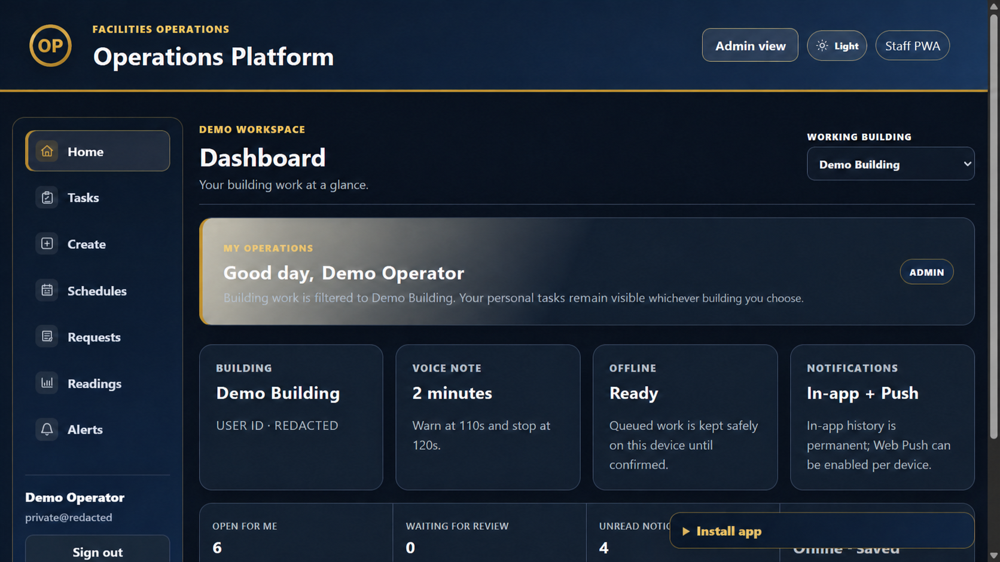
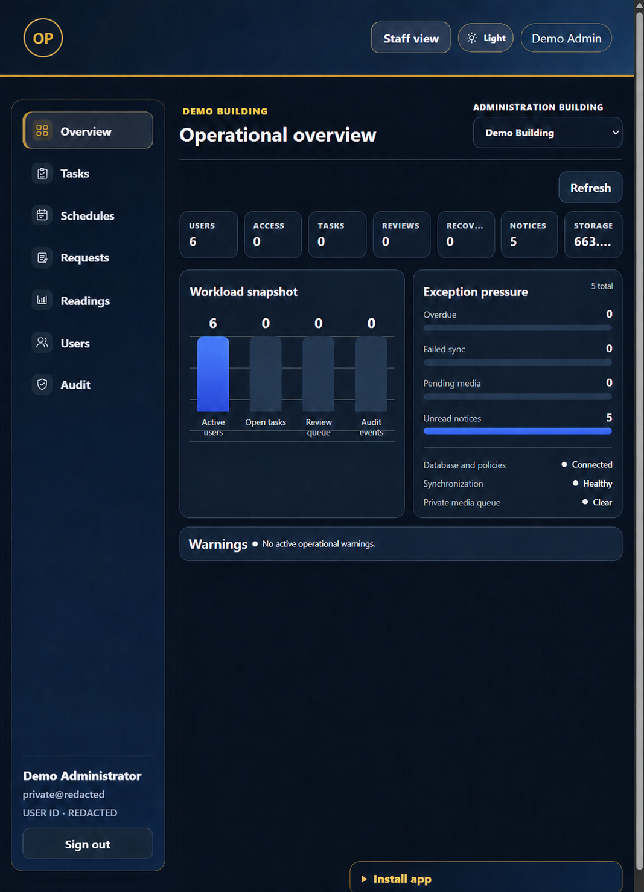
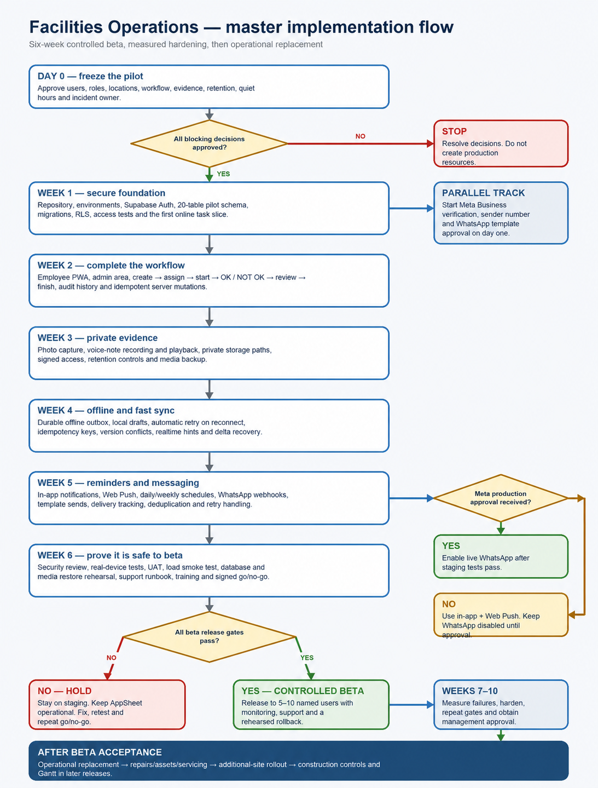
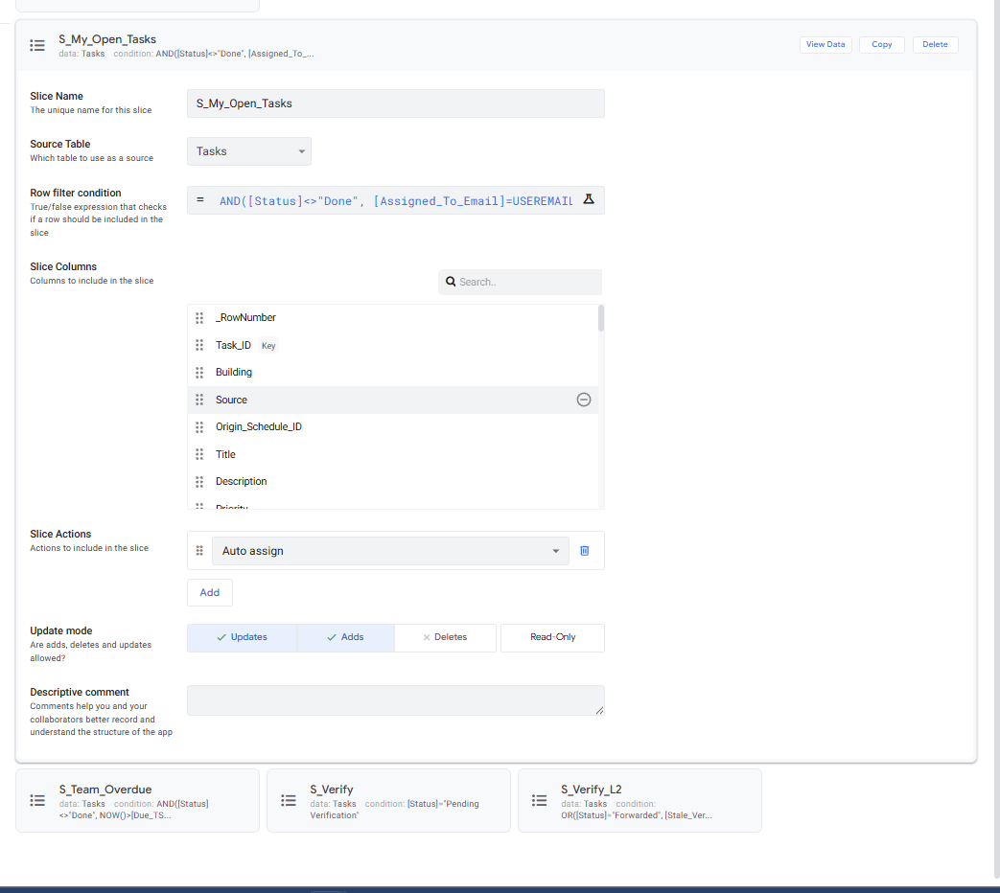
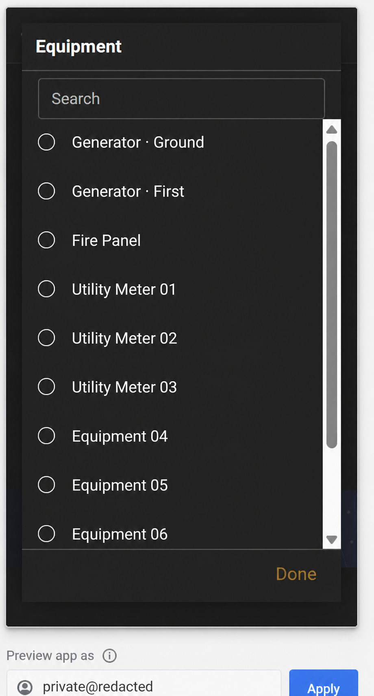
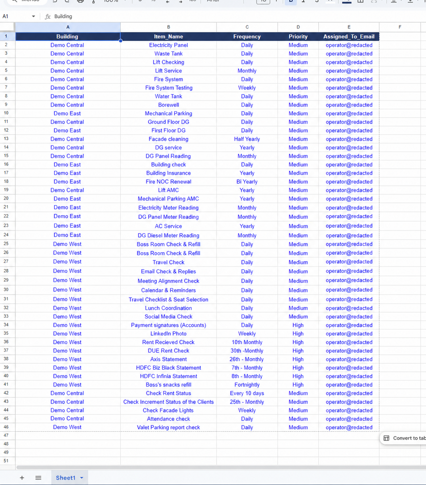

Everything in one place
Staff and managers use connected views for the same tasks, schedules, requests, readings, and reviews.
Business software · Websites · Automation
Jaipur, India · Remote worldwide
I turn manual work into simpler digital tools.
I build internal tools that reduce manual work and websites that help businesses explain and sell what they do.
↓01 / Flagship product
A staff app and management dashboard that keep everyday operational work in one place.
It brings together tasks, schedules, requests, readings, reviews, alerts, and work history for staff and managers.


Staff and managers use connected views for the same tasks, schedules, requests, readings, and reviews.
The staff app can keep work moving through weak connections and recover safely when the signal returns.
Each person sees the right work, managers can review progress, and important actions remain traceable.
How it was launched
The launch plan covered data protection, workflow testing, weak connections, backups, staff testing, support, and recovery.
Open the full delivery map ↗
02 / Business operations system
I built an AppSheet application for assigning work, requesting approvals, recording readings, tracking history, and keeping staff and managers informed.
Real project screenshots · private details removed
The desktop view shows how work is organised. The mobile view shows what staff use while completing it.


Work schedule
This view shows how daily checks, monthly readings, and annual services are planned behind the app.
Open full resolution ↗
Setup and handover guide
The 80-page manual explains how to set up, test, use, and maintain the application.
What information is stored, where it belongs, and which rules keep it accurate.
What staff and managers can see and do inside the application.
How tasks, approvals, requests, readings, and schedules move from start to finish.
How reminders, notifications, testing, troubleshooting, and recovery are handled.
03 / Website development
Two website concepts showing clear messaging, responsive design, and straightforward enquiry paths for different businesses.
04 / What I build
Clear, responsive business websites that explain the offer and guide visitors towards an enquiry or purchase.
Practical staff and administration tools that bring tasks, requests, approvals, and reporting into one place.
AppSheet systems and automated workflows that reduce repetitive work, route approvals, and keep people informed.
Dashboards and analysis that turn operational or commercial data into information people can act on.
Testing, rollout planning, documentation, and training so the finished work can be used and maintained confidently.
05 / Data lab
Open any project for the full-resolution dashboard.
06 / About Madhur
I build practical tools for teams and straightforward websites for businesses.
My work as a Digital Transformation Lead keeps me close to everyday problems such as manual work, scattered information, and slow hand-offs. I turn them into simpler systems.
I hold a Master's in Business Analytics & Data Science and a BBA in Data Analytics, so I approach each project from both a business and technical perspective.